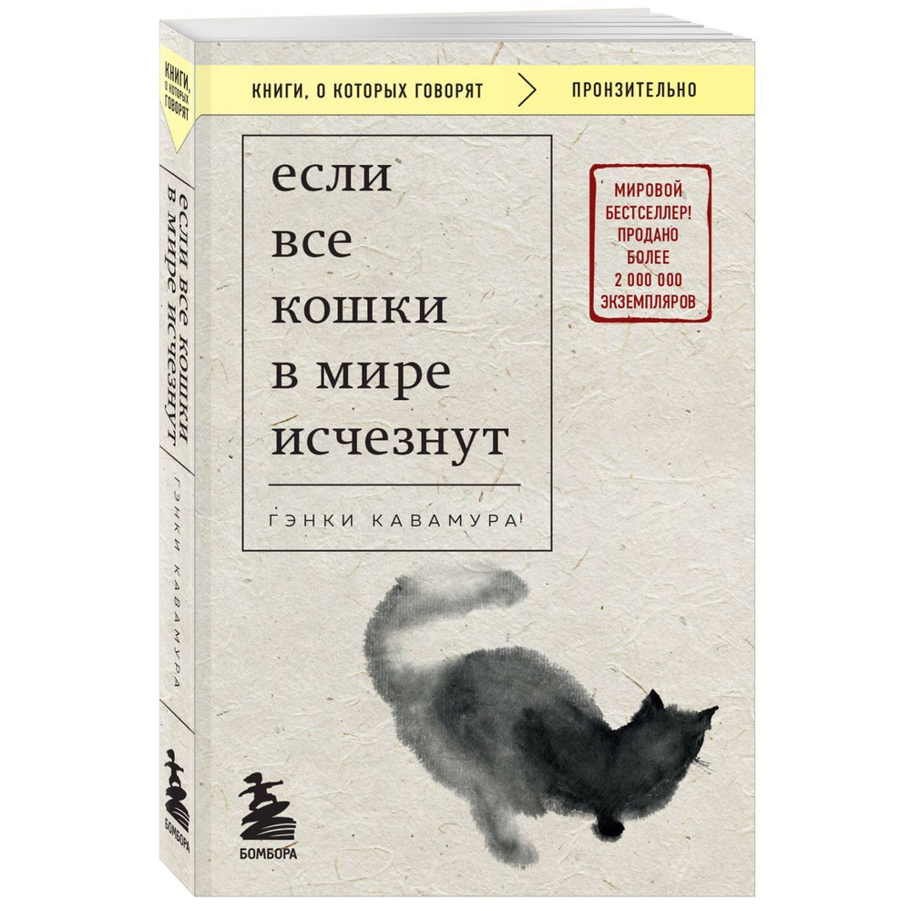

Нажмите на картинку для увеличения
Трогательная и философская история о жизни, смерти и о том, что действительно важно. Молодой почтальон узнает, что ему осталось жить совсем немного. Но появляется демон, который предлагает сделку: за каждый предмет, который исчезнет из мира, человек получит один дополнительный день жизни. Что выберет герой? И что случится, если из мира исчезнут все кошки?
Эта книга заставит вас задуматься о ценности каждого момента и о том, как много значат для нас те, кто рядом.
© 2026 Интернет-магазин "Мир книг". Все права защищены.